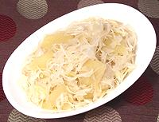

|
Sauerkraut with Apples & WineGermany - Sauerkraut und Apfel n Weisswein | ||||
| Serves: Effort: Sched: DoAhead: |
8 side ** 1-1/4 hr Yes |
Germans love sauerkraut, often prepared with Apples to temper the the sharpness of the kraut. Every cook has their own way - see Variations. | |||
| I like this recipe plain with separately simmered knockwurst or bratwurst. For a similar recipe see Südtirol Sauerkraut with Apples and Wine, and for one better suited to beef or veal, see Sauerkraut with Apples. | |||||
|
|
2 1-1/2 6 1/4 3 2-1/2 2-1/2 |
# # t c c |
Sauerkraut (1) Apples (2) Juniper Berries Caraway seed (opt) Bay Leaves Wine, white (3) Water Options (6) |
Prep - (15 min)
|